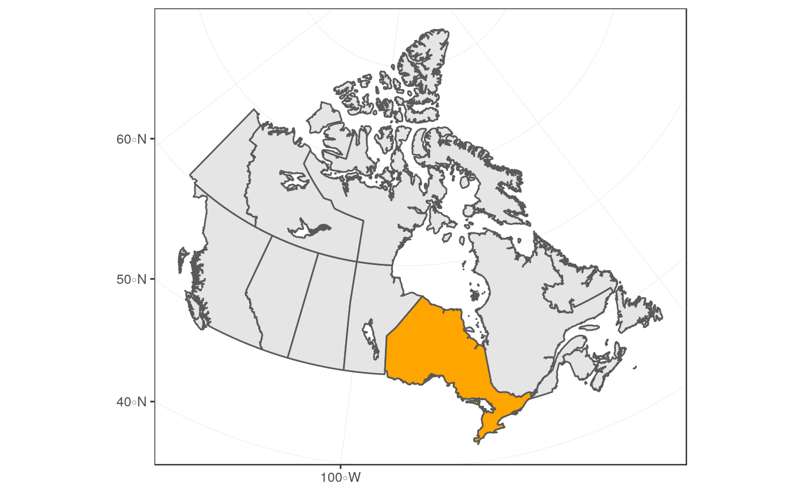
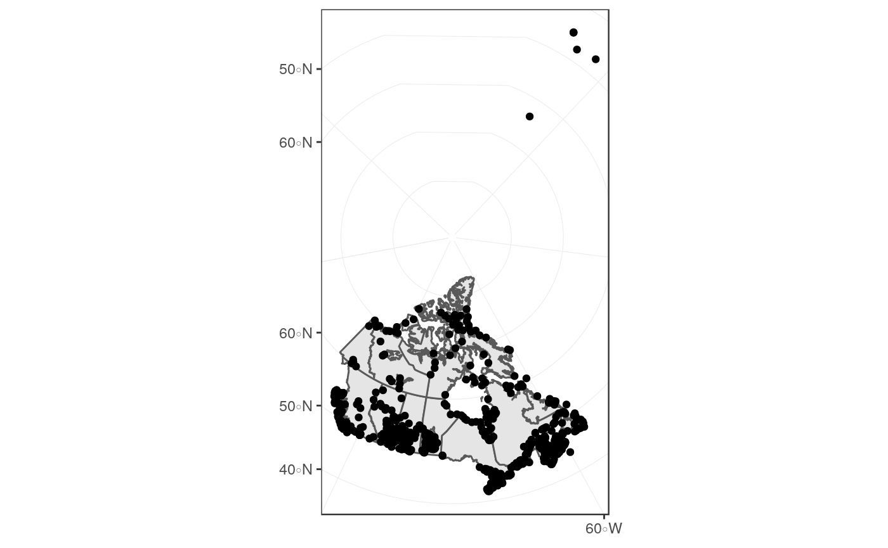
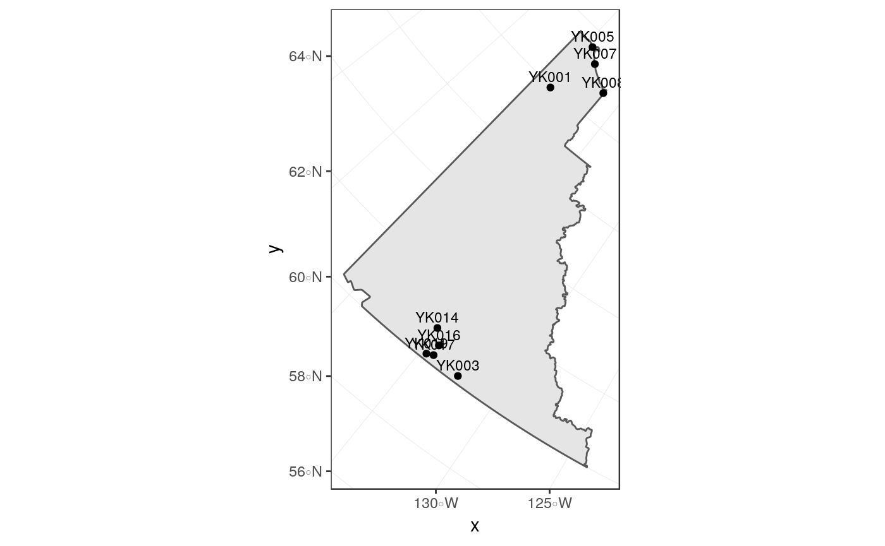
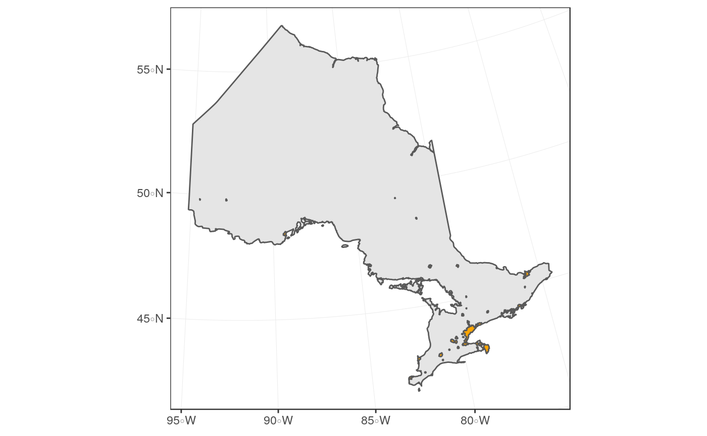
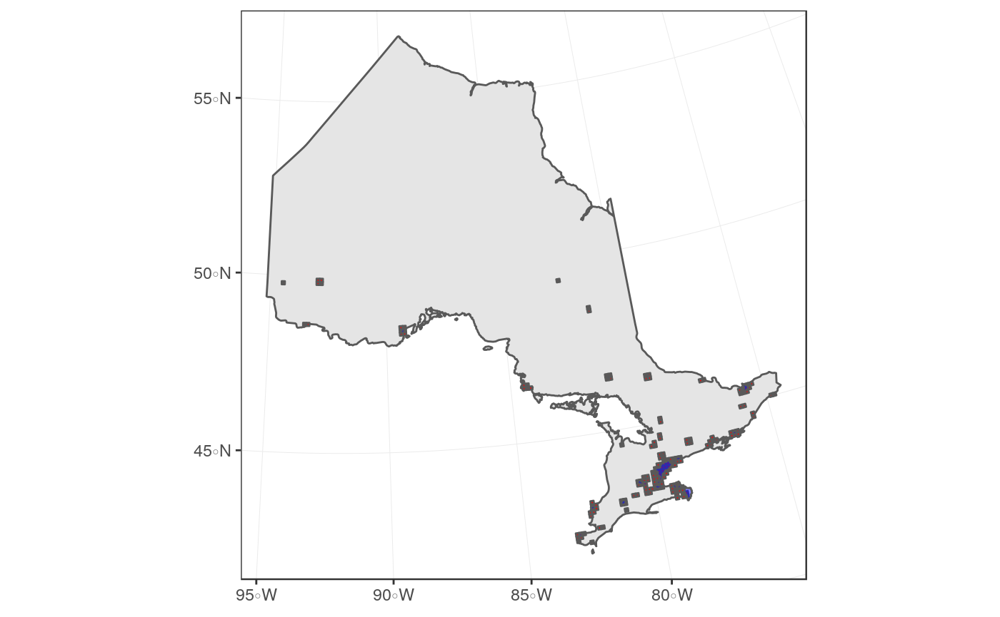
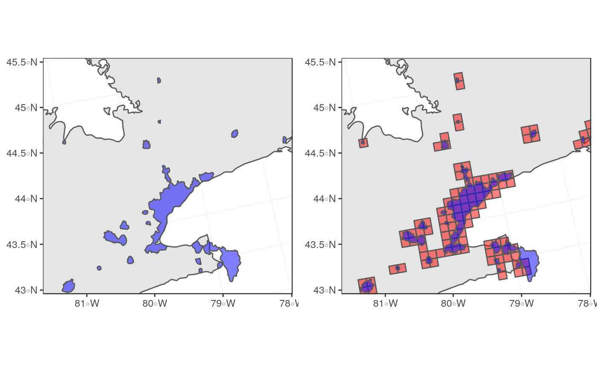
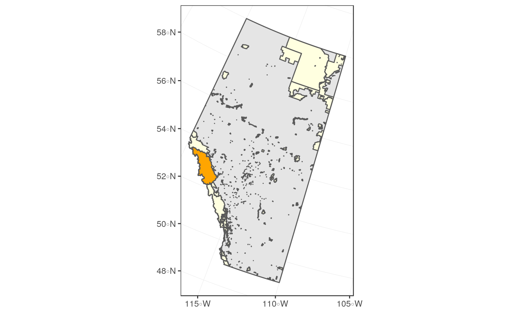

In the main data download functions for naturecounts, nc_data_dl() and nc_count(), you have the option of filtering data by region. In this article we will explore the various ways of specifying regional filters.
region must be a named list with one of the following:
country - Country code (e.g., CA for Canada)statprov - State/province code (e.g., MB for Manitoba)subnational2 - Subnational (type 2) code (e.g., CA.MB.07 for the Brandon Area)iba - Important Bird Areas (IBA) code (e.g., AB001 for Beaverhill Lake in Alberta)bcr - Bird Conservation Regions (e.g., 2 for Western Alaska)utm_squares - UTM square code (e.g., 10UFE96 for a grid in Alberta)bbox - Bounding box coordinates (e.g., c(left = -101.097223, bottom = 50.494717, right = -99.511239, top = 51.027557) for a box containing Riding Mountain National Park in Manitoba)To use the region argument:
Search by name (English or French)
## country_code country_name country_name_fr
## 1 UM United States Minor Outlying Islands Îles mineures éloignées des États-Unis
## 2 US United States États-Unis
## 3 VI Virgin Uslands, U.S. Îles Vierges des États-UnisBrowse the code list
Use the resulting code(s)
Search by name (English, French, or Spanish)
## country_code statprov_code statprov_name_es statprov_name statprov_name_fr
## 1 US DC Distrito de Colombia District of Columbia District de ColumbiaBrowse the code list
Use the resulting code(s)
Search by name
Language depends on location: - Mexico = Spanish - USA = English - Quebec = French - Rest of Canada = English
## country_code statprov_code subnational2_code subnational2_name ebird_code
## 1 CA QC CA.QC.MR Communauté-Urbaine-de-Montréal CA-QC-MRBrowse the code list
Use the resulting code(s)
Search by name (English or French)
## iba_code iba_name status alt_max iba_name_fr bcr_code lon statprov area
## 1 MB010 Oak Hammock Marsh WMA G 233 Oak Hammock Marsh WMA 11 -97.13 MB 36
## nearest_town alt_min ncc_region lat
## 1 Winnipeg 233 35 50.17Browse the code list
Use the resulting code(s)
In this section we’ll go over how to use spatial data to more precisely define regional filters.
We’ll be using the tidyverse packages dplyr and ggplot2 for data manipulation and plotting, respectively. We’ll use the gridExtra to combine figures. We’ll use the sf package for working with spatial data, and the rnaturalearth package to get example spatial data.
If you have your own spatial data files that you would like to read into R, we recommend reading the Reading, Writing and Converting Simple Features Vignette from the sf website.
First we’ll get some spatial objects for our explorations from the rnaturalearth package. A map of Canada and a map of Ontario, both transformed from CRS 4326 (unprojected lat/lon) to 3347 (NAD83 Statistics Canada).
canada <- ne_states(country = "canada", returnclass = "sf") %>%
st_transform(3347)
ontario <- ne_states(country = "Canada", returnclass = "sf") %>%
filter(name == "Ontario") %>%
st_transform(3347)ggplot() +
theme_bw() +
geom_sf(data = canada) + # Map of Canada
geom_sf(data = ontario, fill = "orange") # Map of Ontario
To get a visual idea of where different Important Bird Areas are, let’s plot them on our map of Canada.
First we need to grab the IBA data frame and convert it to a spatial object. Because the data contains lat/lon, we assign it to CRS 4326 for GPS lat/lon data, and then convert it to match the crs of our maps.
iba <- meta_iba_codes() %>%
st_as_sf(coords = c("lon", "lat"), crs = 4326) %>%
st_transform(3347)
ggplot() +
theme_bw() +
geom_sf(data = canada) +
geom_sf(data = iba)
If you want to narrow in on only one province, filter the map of Canada and the IBA data frame:
yk <- filter(canada, gn_name == "Yukon")
iba_yk <- filter(iba, statprov == "YK")
ggplot() +
theme_bw() +
geom_sf(data = yk) +
geom_sf(data = iba_yk) +
geom_sf_text(data = iba_yk, aes(label = iba_code), size = 3, vjust = -0.5)
Often you might be interested only in observations which fall within a very specific geographic area. While the nc_data_dl() function cannot take a shapefile as an argument, you can use shape files to specify either the utm_squares or the bbox (bounding box) surrounding your area of interest. After the download, you can then trip the resulting observations to your original shape file.
In the following example, let’s assume that you wish to concentrate only on observations from urban areas in Ontario, Canada.
We’ll download that data with the rnaturalearth package and save it to the working directory (“.”)
Now that we’ve saved it, we can load it for use.
## OGR data source with driver: ESRI Shapefile
## Source: "/home/steffi/Projects/Business/BSC/NatureCounts/naturecounts/vignettes/articles/region_files", layer: "ne_10m_urban_areas"
## with 11878 features
## It has 4 fields
## Integer64 fields read as strings: scalerankFirst we’ll transform it to the 3347 CRS and filter it to contain only Ontario, but clipping it to our map of Ontario. st_join(spatial1, spatial2, left = FALSE) means inner join, resulting in clipping.
urban_ontario <- urban %>%
st_transform(3347) %>%
st_join(ontario, left = FALSE)
ggplot() +
theme_bw() +
geom_sf(data = ontario) +
geom_sf(data = urban_ontario, fill = "orange")
Now to filter your observations to urban areas, the first step would be to get all the UTM squares which overlap these areas. We can do this collecting the UTM squares with meta_utm_squares() and then filtering these to include only those that overlap these urban areas.
utm_on <- meta_utm_squares() %>%
filter(statprov_code == "ON") %>%
st_transform(3347) %>% # Transform to match urban CRS
st_join(urban_ontario, left = FALSE) %>%
distinct() # To omit duplicates of 1+ urban area on a given UTM Square
ggplot() +
theme_bw() +
geom_sf(data = ontario) +
geom_sf(data = utm_on, fill = "red") +
geom_sf(data = urban_ontario, fill = "blue", alpha = 0.5)
It’s a bit tricky to see exactly what’s going on, so let’s zoom in a bit.
However, it’s also a bit tricky to zoom when we’re using a non-lat/lon CRS because the units are unintuitive. So let’s specify the limits we want, then transform them in the CRS we’re using and use that to set our limits.
zoom <- data.frame(lon = c(-81, -78, -81, -78),
lat = c(43, 43, 45, 45)) %>%
st_as_sf(coords = c("lon", "lat"), crs = 4326) %>%
st_transform(3347) %>%
st_bbox()
zoom## xmin ymin xmax ymax
## 7067507.7 830951.5 7352759.4 1101349.9For convinience, we’ll use the grid.arrange() function from the gridExtra to line up the figures side-by-side so we can get a really good look at what we’re doing.
grid.arrange(
ggplot() +
theme_bw() +
geom_sf(data = ontario) +
geom_sf(data = urban_ontario, fill = "blue", alpha = 0.5) +
coord_sf(xlim = zoom[c(1,3)], ylim = zoom[c(2,4)]),
ggplot() +
theme_bw() +
geom_sf(data = ontario) +
geom_sf(data = utm_on, fill = "red", alpha = 0.5) +
geom_sf(data = urban_ontario, fill = "blue", alpha = 0.5) +
coord_sf(xlim = zoom[c(1,3)], ylim = zoom[c(2,4)]),
nrow = 1)
So now we can see that the utm_squares we’ve selected overlap all our urban areas. Now we can download the observations for all of these areas:
Finally, we do clip the resulting observations to the exact urban areas:
obs <- st_as_sf(obs, coords = c("lon", "lat"), crs = 4326) %>%
st_transfor(crs = 3347)
st_join(distinct(urban_ontario), left = "FALSE")
ggplot() +
theme_bw() +
geom_sf(data = ontario) +
geom_sf(data = urban_ontario, fill = "blue", alpha = 0.5) +
geom_sf(data = obs) +
coord_sf(xlim = zoom[c(1,3)], ylim = zoom[c(2,4)])In this example, we’ll gather all observations for Jasper National Park in Alberta, Canada.
First we’ll download and extract the shapefiles available from the Alberta Parks website.
url <- "https://www.albertaparks.ca/media/2941843/parks_and_protected_areas_alberta.zip"
download.file(url = url)
unzip("parks_and_protected_areas_alberta.zip")
parks <- st_read("Parks_Protected_Areas_Alberta.shp")## Reading layer `Parks_Protected_Areas_Alberta' from data source `/home/steffi/Projects/Business/BSC/NatureCounts/naturecounts/vignettes/articles/region_files/Parks_Protected_Areas_Alberta.shp' using driver `ESRI Shapefile'
## Simple feature collection with 477 features and 17 fields
## geometry type: MULTIPOLYGON
## dimension: XY
## bbox: xmin: 170844.3 ymin: 5425575 xmax: 860845.9 ymax: 6659216
## epsg (SRID): NA
## proj4string: +proj=tmerc +lat_0=0 +lon_0=-115 +k=0.9992 +x_0=500000 +y_0=0 +datum=NAD83 +units=m +no_defsNow we’ll get a background map of Alberta and a spatial file of just Jasper.
alberta <- ne_states(country = "Canada", returnclass = "sf") %>%
filter(name == "Alberta") %>%
st_transform(3347)
jasper <- filter(parks, NAME == "Jasper")Let’s see what that all looks like.
ggplot() +
theme_bw() +
geom_sf(data = alberta) +
geom_sf(data = parks, fill = "lightyellow") +
geom_sf(data = jasper, fill = "orange")
Using a bounding box is a good way to download observations only from the Jasper area. But remember that the bounding box coordinates used by nc_data_dl() are in lat/lon, so we’ll have to back transform.
## xmin ymin xmax ymax
## -119.54484 52.12700 -116.79566 53.48118We can give this directly to our nc_data_dl() function.
Finally we clip the observations to the exact area of Jasper.